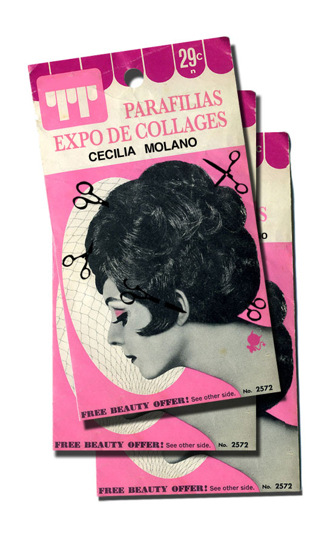

Hola! aprovecho para mandaros la info de la expo pequeñita que he montado en Los Placeres de Lola y para contaros que tchán tchán!! tengo nueva web!!! Todavía no está acabada pero ya va teniendo contenidos... quedan vídeos por meter y esas cosas.. pero como total, ya los habéis visto todos cuarenta veces.. El webmaster ha sido Nano, que me ha preparado una cosa que se llama wordpress y que funciona como un blog y es perfecta para todos los que como yo, tenéis sarpullidos cuando os hablan de flash y html... Ah! y ya no se llama rizomarte, se llama como yo, para que me encontréis rápido: Pues eso.. y sobre la expo... más información abajo. |
|
|  | |
PARAFILIAS Una parafilia (del griego παρά, pará: ‘al margen de’, y φιλία, filía: ‘amor’) es un patrón de comportamiento sexual en el que la fuente predominante de placer no se encuentra en la cópula, sino en alguna otra actividad. Voyeurs, exhibicionist@s,
A partir del día 11 de mayo, en: |
|
c/ Doctor Fourquet, 34 |
|
Para más información podéis visitar nuestra página web: |
|